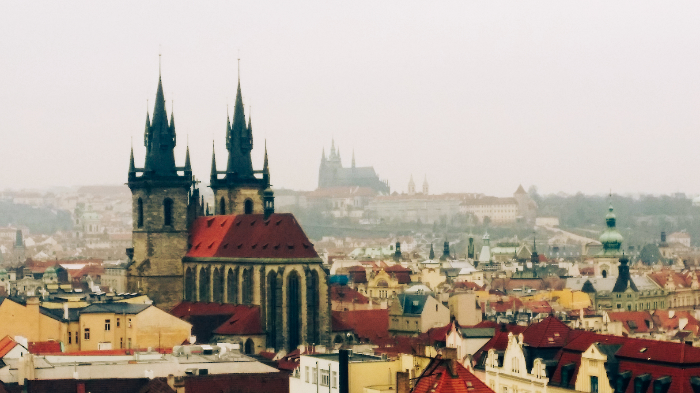
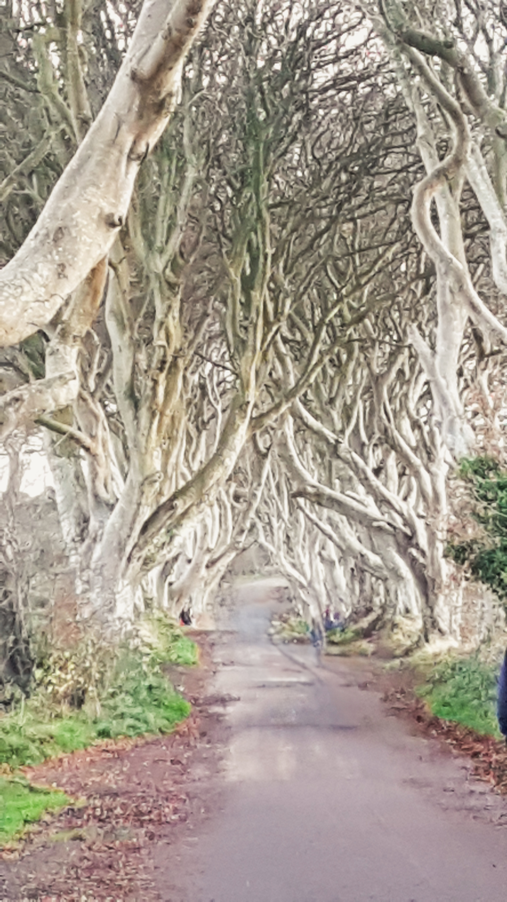
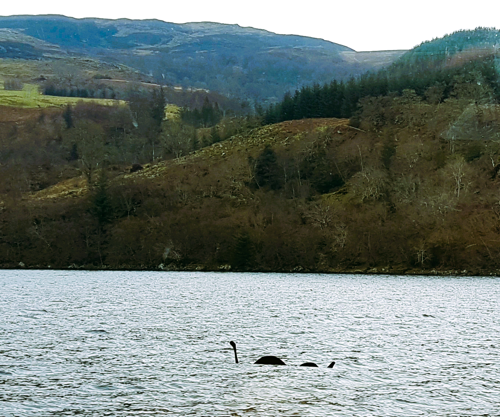
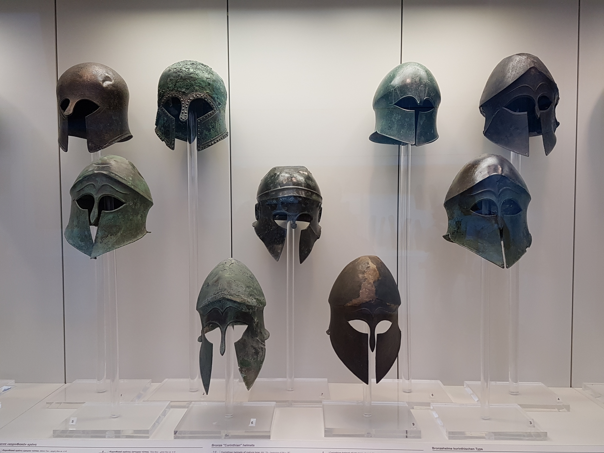
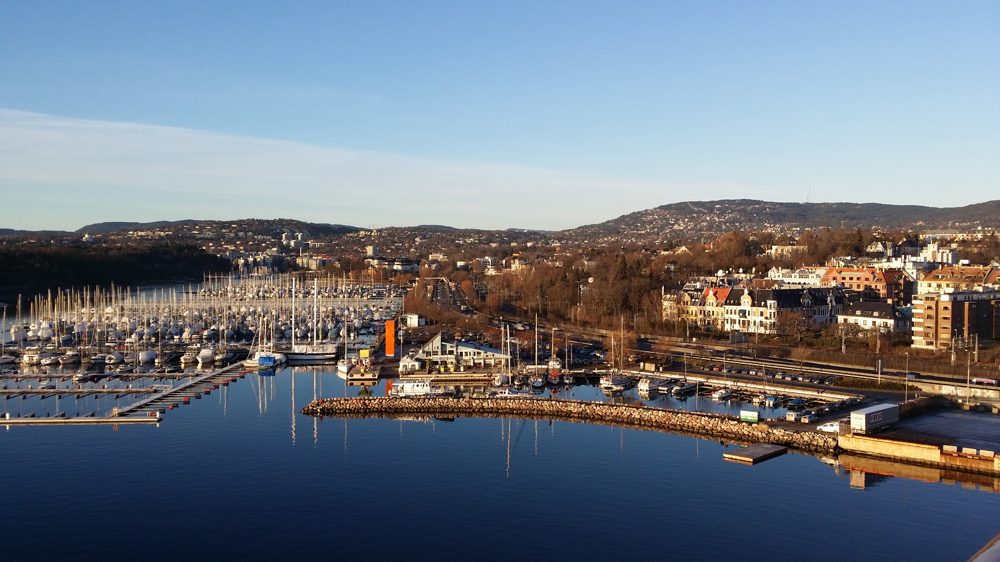
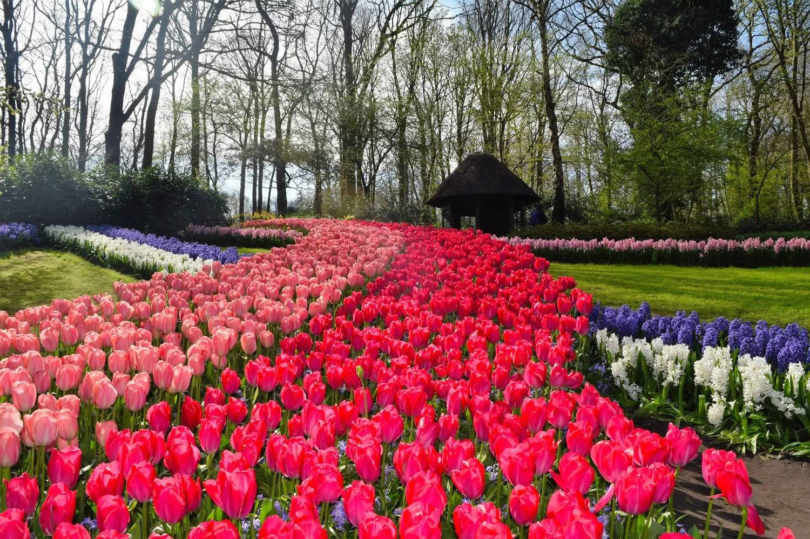

1. "Bone Church": Czech Republic2. Stonehenge after 5,000 years3. Colorful facades line Nyhavn's harbor — a classic slice of Copenhagen4. Tallinn, Estonia

5. Skyline of Prague, Czech Republic

6. Game of Thrones Dark Hedges (N. Ireland)

7. Spotted: Loch Ness, Scotland8. Sedlec Ossuary "Bone Church": Czech Republic9. Dubrovnik, Croatia10. Game of Thrones King's Landing (Dubrovnik, Croatia)11. St. Petersburg, Russia: Church of the Savior on Spilled Blood12. Olympia, Greece: The original Olympic track in 8th century BC

13. Corinthian helmets, 7th-5th century BC14. The Parthenon, crown of the Acropolis in Athens15. Mykonos Windmill: Iconic against the Aegean blue

16. Oslo's waterfront charm — where the marina meets the fjord17. Budapest18. Budapest at Night19. A slice of Dutch heritage in Amsterdam, The Netherlands20. Just shy of the Polish-Czech border sits Czocha Castle in Leśna, Poland .21. Denmark's 1913 tribute to Hans Christian Andersen's The Little Mermaid.

22. Tulip paradise at Keukenhof, The Netherlands